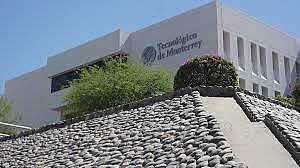
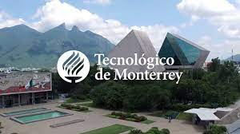
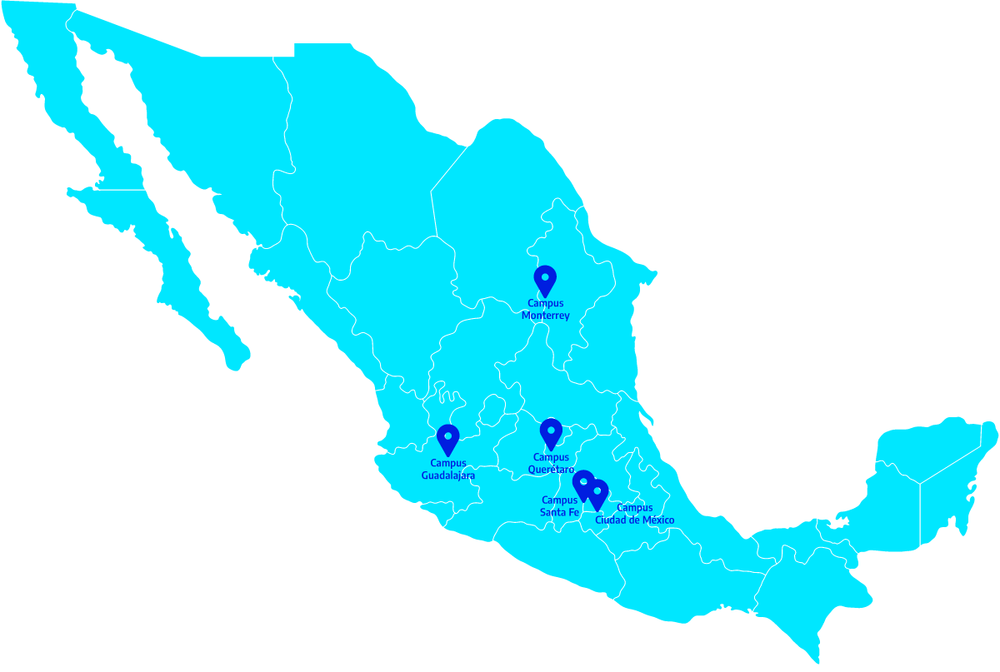

tecnologico de monterrey
>
l Instituto Tecnológico y de Estudios Superiores de Monterrey (ITESM), conocido como el Tecnológico de Monterrey o el «Tec de Monterrey», es una universidad privada mexicana con su sede principal en Monterrey, Nuevo León.
Fundada en 1943 por Eugenio Garza Sada, un destacado industrial regiomontano egresado del MIT, la universidad siempre ha tenido estrechos vínculos con la élite empresarial mexicana; en el 2019, fue listada como la decimoquinta universidad del mundo con el mayor número de egresadas y egresados multimillonarios (billionaires) según el Times Higher Education y la única universidad de América Latina que aparece en el ranking.
Se caracteriza por tener una presencia activa tanto en las áreas de negocio como de innovación tecnológica por parte de sus ingenierías. Tiene una de las mejores escuelas de negocios en México y es la universidad mejor posicionada del país. Además, es una de las 45 universidades en el mundo nombradas con 5 QS Stars.
Se destaca por ser la universidad privada con más patentes registradas en todo el país, gracias a su investigación destinada principalmente a biotecnología, salud, sector automotor, alimentos e industria manufacturera.Fue el primer instituto de educación superior de Iberoamérica en conectarse a la red de BITNET en 1986 y la primera a la red de internet en 1989,1112 además de haber creado el organismo NIC México, encargado de las primeras gestiones de conexión a internet en el país, y de la administración y creación de los subdominios (o códigos territoriales) es uno de los pioneros principales de las tecnologías de la información y la comunicación actuales en Iberoamérica y en México

¿Cuánto cuesta estudiar en el Tec?
Recientemente, los costos por estudiar en esta institución, la cual cuenta con 26 campus o sedes alrededor de todo México, fueron revelados y, sin duda, las cifras pueden asombrar a la mayoría de los mexicanos.
El costo de la educación en Tec de Monterrey está determinado, principalmente, por la carrera que se desea cursar. El campus que se elija también es otro factor determinante, pues la colegiatura del Tec es distinta para cada campus en cuestión, por lo que, dependiendo de donde deseas iniciar tus estudios, será un costo u otro. El precio de la mensualidad en el Tec de Monterrey ronda los $30,094 pesos.
Compartir en Whatsapp
Enviar por email
Mostrar comentarios
El Tec de Monterey, como se le conoce popularmente al Instituto Tecnológico y de Estudios Superiores de Monterrey, es una de las universidades privadas más prestigiosas de México
Fundada en 1943 por Eugenio Garza Sada, un destacado industrial regiomontano egresado del MIT, la universidad siempre ha tenido estrechos vínculos con la élite empresarial mexicana; en el 2019, fue listada como la decimoquinta universidad del mundo con el mayor número de egresadas y egresados multimillonarios y fue la única universidad de América Latina en ser contemplada en dicho ranking.
¿Cuánto cuesta estudiar en el Tec?
Recientemente, los costos por estudiar en esta institución, la cual cuenta con 26 campus o sedes alrededor de todo México, fueron revelados y, sin duda, las cifras pueden asombrar a la mayoría de los mexicanos.
El costo de la educación en Tec de Monterrey está determinado, principalmente, por la carrera que se desea cursar. El campus que se elija también es otro factor determinante, pues la colegiatura del Tec es distinta para cada campus en cuestión, por lo que, dependiendo de donde deseas iniciar tus estudios, será un costo u otro. El precio de la mensualidad en el Tec de Monterrey ronda los $30,094 pesos.
¿Cuánto se paga al semestre?
En promedio, el costo de estudiar en el TEC de Monterrey sin beca es de 130 mil a 150 mil pesos al semestre, incluyendo colegiatura y Gastos Médicos Mayores.
Actividades Culturales
En el Tec de Monterrey estamos convencidos que contar con un espacio creativo en donde nuestros estudiantes puedan transmitir sus ideas y emociones a través de la expresión artística es vital para el bienestar integral.
Es por ello que ofrecemos clases y talleres culturales en los cuales puedes aprender, practicar o mejorar tus habilidades en las diferentes disciplinas que se imparten, tales como danza contemporánea, jazz, hip hop, ritmos latinos, danza árabe, guitarra, teclado, percusiones,pintura, fotografía, entre otras. Puedes participar en obras de teatro tradicional, revistas musicales, ensambles, conciertos o integrarte a una de las compañías de danza, música, teatro y canto. En el Tec también tienes oportunidad de participar en los concursos nacionales de baile,composición, monólogos, creación literaria o incluso en nuestras giras internacionales de danza folklórica a Europa, Asia, América Latina y EUA

Actividades Deportivas
En el Tec de Monterrey creemos que la práctica constante de un deporte también favorece tu desarrollo integral al brindarte espacios para mantener un estilo de vida saludable. En el área atlética y deportiva tenemos programas para todos y todas
Nuestros campus internacionales
Te invitamos a conocer los 5 campus que cuentan con las facilidades para recibir estudiantes internacionales como tú. Si requieres información acerca de nuestra ubicación exacta o quieres visitar un campus específico, sólo tienes que dar clic al que sea de tu interés.

envianos tus datos para recivir iformacion de la carrera que deseeas
.jpg)